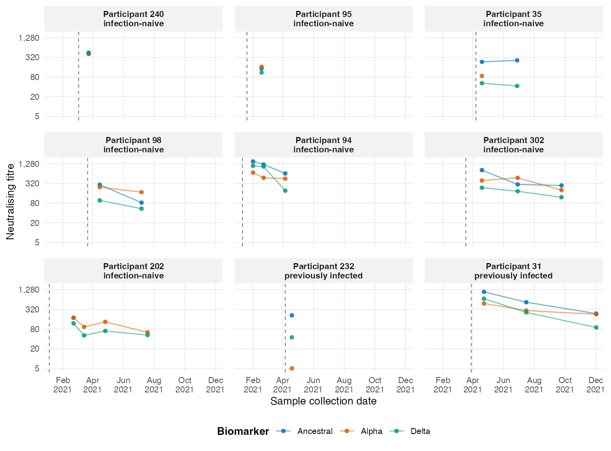
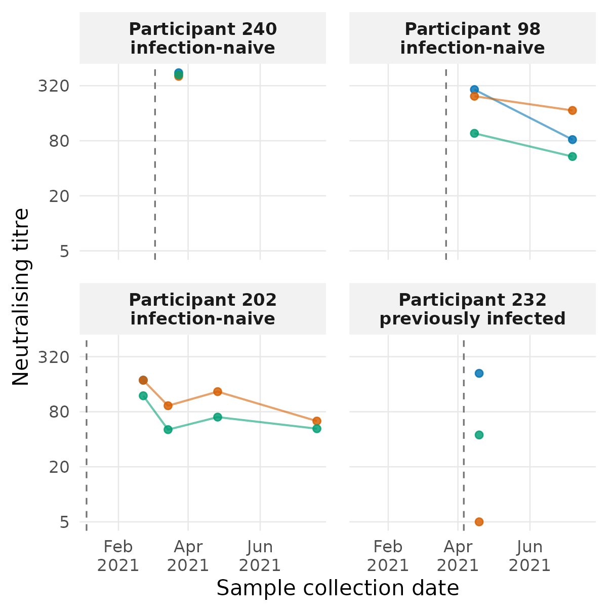
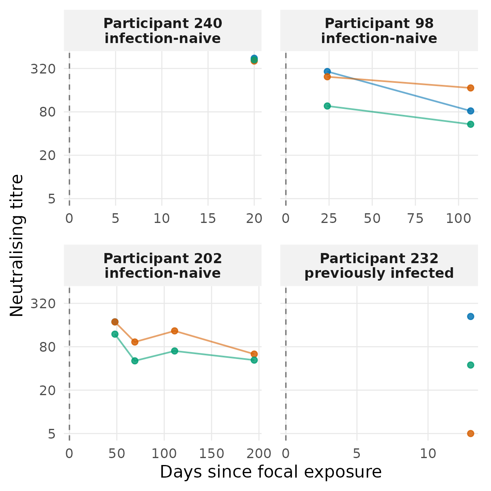

epikinetics accepts an ordinary data frame in long
format: one row per participant, measurement date or time, and
biomarker. Studies commonly record calendar dates first and align them
to an exposure-centred kinetic timescale during preparation.

A deterministic, history-stratified subset of nine participants from the bundled Delta-wave data. Selection spans quantiles of visit count and follow-up duration; it does not use fitted values. Colour identifies biomarker, dates show sample collection, and each dashed line marks that participant’s focal exposure.
Some people contribute one visit and others several; visits occur at different calendar dates, and each visit may include multiple biomarker targets. That imbalance is part of the data, not something the user must regularise onto a common grid.
Align calendar dates
Kinetic parameters are most naturally expressed relative to an
exposure, even when the raw study records calendar dates.
align_time_to_reference() makes that transformation
explicit and inspectable while preserving the original dates.
library(epikinetics)
dated_data <- doc_delta_data()
names(dated_data)[names(dated_data) == "day"] <- "measurement_date"
names(dated_data)[names(dated_data) == "last_exp_day"] <- "exposure_date"
dated_data$measurement_date <- as.Date(dated_data$measurement_date)
dated_data$exposure_date <- as.Date(dated_data$exposure_date)
dated_data[1:5, c(
"pid", "exposure_date", "measurement_date", "titre_type", "value"
)]#> pid exposure_date measurement_date titre_type value
#> 1 1 2021-03-08 2021-03-10 Ancestral 175.9350
#> 2 1 2021-03-08 2021-04-15 Ancestral 607.5750
#> 3 1 2021-03-08 2021-07-08 Ancestral 179.0463
#> 4 1 2021-03-08 2021-03-10 Alpha 5.0000
#> 5 1 2021-03-08 2021-04-15 Alpha 416.7905Here the reference is a participant-specific column. Passing
id also checks that its repeated value is consistent within
each participant.
aligned_data <- align_time_to_reference(
dated_data,
measurement_date = "measurement_date",
reference = "exposure_date",
id = "pid",
time = "time_since_exposure"
)
aligned_data[1:5, c(
"pid", "exposure_date", "measurement_date", "time_since_exposure"
)]#> pid exposure_date measurement_date time_since_exposure
#> 1 1 2021-03-08 2021-03-10 2
#> 2 1 2021-03-08 2021-04-15 38
#> 3 1 2021-03-08 2021-07-08 122
#> 4 1 2021-03-08 2021-03-10 2
#> 5 1 2021-03-08 2021-04-15 38Use one shared date instead with, for example,
reference = as.Date("2021-01-01"). Differences are returned
in days and may be negative, so pre-exposure records remain visible
during checking. The current single-exposure model itself uses
observations on or after time zero.
The same four participants look different before and after alignment:


The same observations before and after alignment. Left: participant-specific exposure dates occur at different calendar times. Right: exposure is day zero for every participant.
Required columns
| Default column | Meaning |
|---|---|
pid |
User-facing participant identifier. |
day |
Observation time. |
last_exp_day |
Time of the known focal exposure. |
titre_type |
Biomarker or assay target. |
value |
Finite, positive response on the supplied scale. |
Alternative names are supplied through the id,
time, exposure, biomarker, and
value arguments. Times may be numeric, Date,
POSIXt, or ISO date strings. Set
exposure = NULL when time is already numeric
time since exposure, as in the aligned data above. The focal exposure
and all model covariates must be constant within participant.
Prepare and inspect
prepared <- prepare_epikinetics_data(
aligned_data,
formula = ~ infection_history,
time = "time_since_exposure",
exposure = NULL,
biomarker_order = c("Ancestral", "Alpha", "Delta"),
lower_limit = 5,
upper_limit = 2560
)
prepared#> Prepared epikinetics model data
#> Observations: 2255
#> Participants: 335
#> Biomarkers: 3 (Ancestral, Alpha, Delta; explicit order)
#> Covariates: infection_history
#> Effects on: baseline, time_to_peak, waning_duration, boost_rate, early_waning_rate, late_waning_rate
#> Random effects: baseline, boost_rate, early_waning_rate, late_waning_rate
#> Censoring: none=2003, left=126, right=126
#> Time range: 0 to 578 since exposure
#> Model scale: log2(value / 1); range 2.321928 to 11.321928
#> Exposure: time supplied relative to exposure at zero
summary(prepared)#> Prepared epikinetics model-data summary
#> observations participants biomarkers covariates
#> 2255 335 3 1
#>
#> Ranges
#> quantity minimum maximum
#> time_since_exposure 0.000000 578.00000
#> response 5.000000 2560.00000
#> model_response 2.321928 11.32193
#>
#> Censoring
#> censoring observations
#> none 2003
#> left 126
#> right 126
#>
#> Participant observation counts
#> Min. 1st Qu. Median Mean 3rd Qu. Max.
#> 3.000 5.000 6.000 6.731 9.000 14.000
#>
#> Formula: ~infection_history
#> Transformation: log2(value / 1)
#> Model-matrix columns: infection_historyPreviously infected (Pre-Omicron)
#> Formula affects: baseline, time_to_peak, waning_duration, boost_rate, early_waning_rate, late_waning_rate
#> Participant random effects: baseline, boost_rate, early_waning_rate, late_waning_rate
#> Biomarker order (explicit): Ancestral, Alpha, Delta
#> Factor reference levels: infection_history=Infection naive
#>
#> Design-column mapping
#> design_column term
#> infection_historyPreviously infected (Pre-Omicron) infection_history
#> variables level reference_level
#> infection_history Previously infected (Pre-Omicron) Infection naive
#> label
#> infection_history=Previously infected (Pre-Omicron) (vs Infection naive)The principal model components can then be inspected independently:
epikinetics_data(prepared)[1:5, ]#> source_row participant participant_index observation_time exposure_time
#> 1 1 1 1 2 0
#> 2 4 1 1 2 0
#> 3 7 1 1 2 0
#> 4 2 1 1 38 0
#> 5 5 1 1 38 0
#> time_since_exposure biomarker biomarker_index value value_model
#> 1 2 Ancestral 1 175.9350 7.458899
#> 2 2 Alpha 2 5.0000 2.321928
#> 3 2 Delta 3 5.0000 2.321928
#> 4 38 Ancestral 1 607.5750 9.246919
#> 5 38 Alpha 2 416.7905 8.703178
#> lower_limit lower_limit_model upper_limit upper_limit_model censoring
#> 1 5 2.321928 2560 11.32193 none
#> 2 5 2.321928 2560 11.32193 left
#> 3 5 2.321928 2560 11.32193 left
#> 4 5 2.321928 2560 11.32193 none
#> 5 5 2.321928 2560 11.32193 none
#> censoring_code infection_history
#> 1 0 Infection naive
#> 2 -1 Infection naive
#> 3 -1 Infection naive
#> 4 0 Infection naive
#> 5 0 Infection naive
prepared$participants[1:5, ]#> participant_index participant exposure_time observation_count
#> 1 1 1 0 9
#> 2 2 2 0 12
#> 3 3 3 0 6
#> 4 4 4 0 9
#> 5 5 5 0 12
#> infection_history
#> 1 Infection naive
#> 2 Infection naive
#> 3 Infection naive
#> 4 Previously infected (Pre-Omicron)
#> 5 Infection naive
model.matrix(prepared)[1:5, , drop = FALSE]#> infection_historyPreviously infected (Pre-Omicron)
#> 1 0
#> 2 0
#> 3 0
#> 4 1
#> 5 0#> [1] "N_observations" "N_participants"
#> [3] "N_biomarkers" "N_covariates"
#> [5] "biomarker" "time"
#> [7] "value" "censoring"
#> [9] "lower_limit" "upper_limit"
#> [11] "observation_start" "observation_end"
#> [13] "participant_sequence" "X"
#> [15] "covariate_active" "participant_effect_active"
#> [17] "grainsize" "population_prior_mean"
#> [19] "population_prior_sd" "participant_sd_prior_scale"
#> [21] "covariate_prior_scale" "observation_sd_prior_scale"The prepared object retains the validated input, labelled model-ready observations, participant table, factor levels and contrasts, biomarker mapping, prediction grid, priors, and literal Stan data list. Integer indices are created internally but remain visible for debugging.
Response scale and biomarker order
With the default scale = "natural", values and censoring
limits are transformed as
The fixed reference_value defaults to 1 and is stored
for inverse transformation. Use scale = "log2" only when
the supplied values and limits are already on that scale.
biomarker_order supplies a complete display and indexing
order. Without it, existing factor levels are preserved, then first
appearance is used. The order propagates through the fit, posterior
tables, predictions, legends, and individual plots.
Read Covariates for formula encoding and Censoring for assay limits. Once the prepared object is correct, continue to Fitting the model.